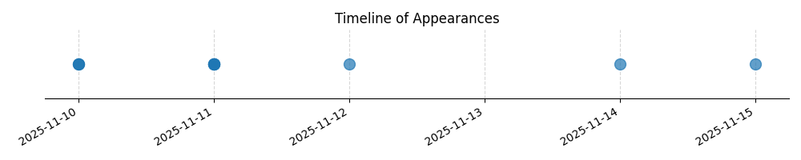

Kategorie: Letecké předpisy
Otázka se týká specifických pravidel a omezení pro vzlety a přistání motorových SLZ (Malých Letadel s Bezpilotním systémem) při nepravidelném provozu. Správná odpověď A specifikuje bezpečné vzdálenosti od obytných budov a nezúčastněných osob, což jsou typické regulatorní požadavky pro provoz dronů a jiných bezpilotních systémů, spadající pod letecké předpisy.

| Datum výskytu |
|---|
| 2025-11-15 |
| 2025-11-14 |
| 2025-11-12 |
| 2025-11-11 |
| 2025-11-10 |